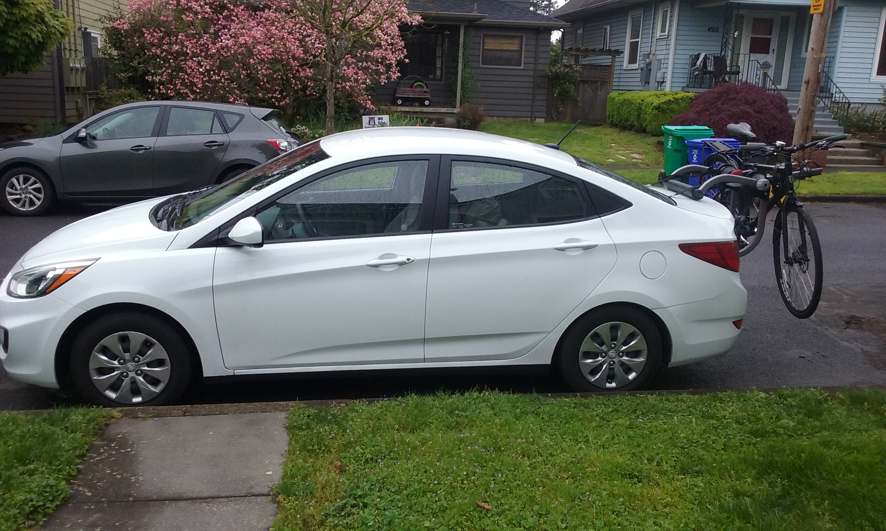

(From Portland, OR) It's time to take on the long road back East. The past year has been a whirlwind, ushering in a flood of changes in my life. In short, family members that lived out West for years moved back to the East Coast for a number of different reasons (leaving me the only member of my immediate family left out West); I lost my grandmother (she and I were very close); I completed a software development bootcamp while working full-time; I sold my house and paired down my belongings to one Hyundai-full (plus a box of craft supplies that I shipped back ahead of time); and I decided to move closer to friends and family in the Eastern part of the country. Whew!
Looking at this picture, my worldly possessions shoehorned into a subcompact car, I feel a little exhausted and relieved. I'm hopeful that my personal hurricane has subsided but I'm afraid I may have just entered the eye of the storm. Either way, I'll take a respite! The upcoming road trip will include visiting 11 states as well as short stays with good friends and family in the midwest. I'll eventually end up in Upstate NY...and from there? Well, let's just say I'm keeping an open mind.
My first stop on the trip will be to the Portland Airport, where I'll collect my dear uncle Stan. He flew out to join me on this trip and he's a great travel companion. I'll post more of our travel adventures here as well as other thoughts / inspirations from the open road. Time to get going!